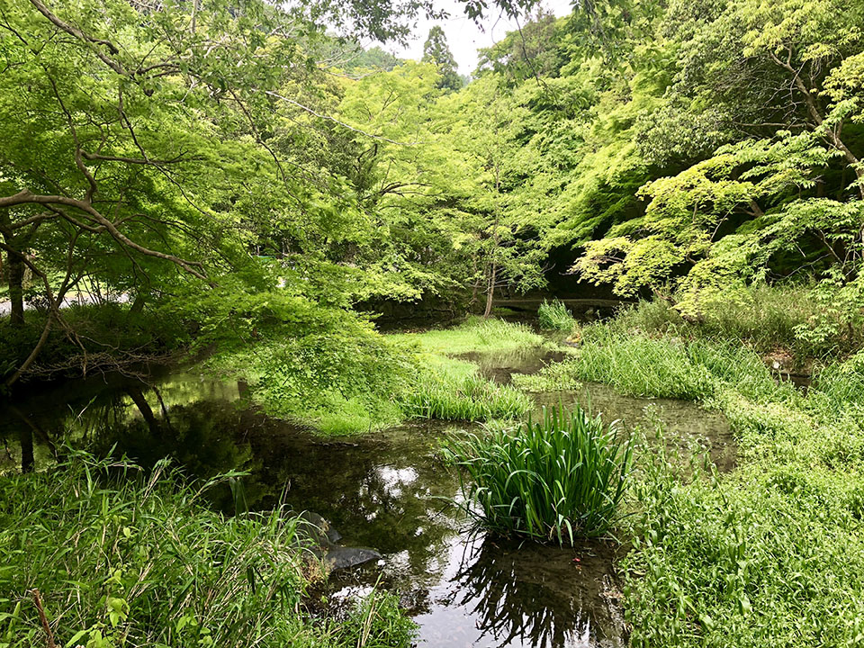
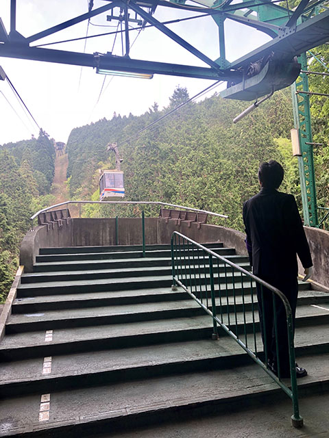
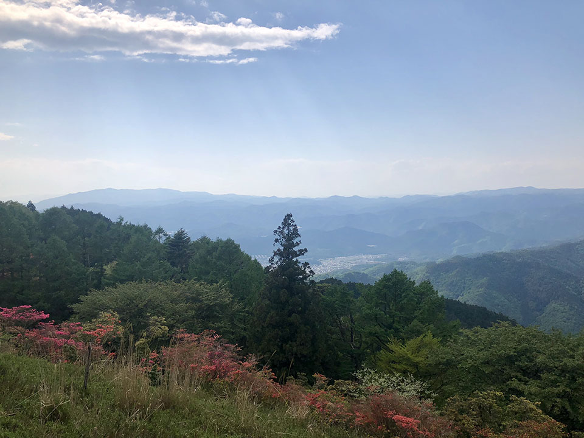
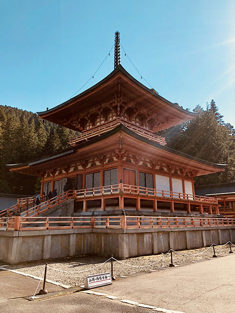
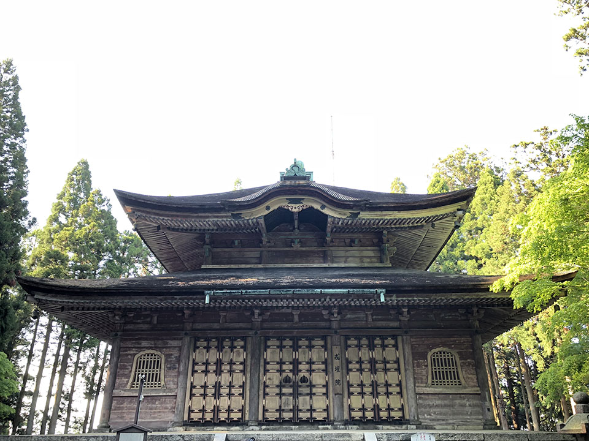
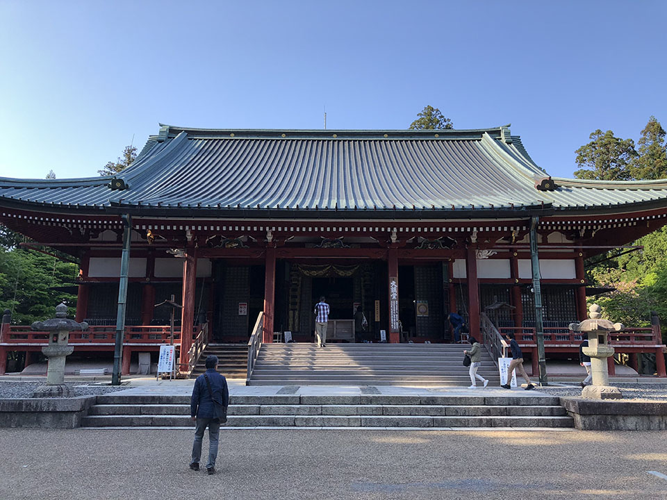
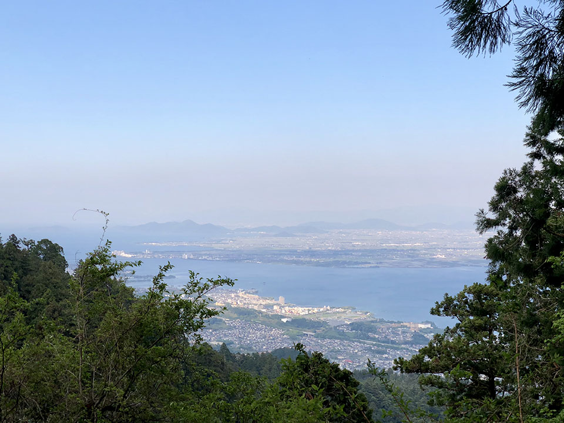
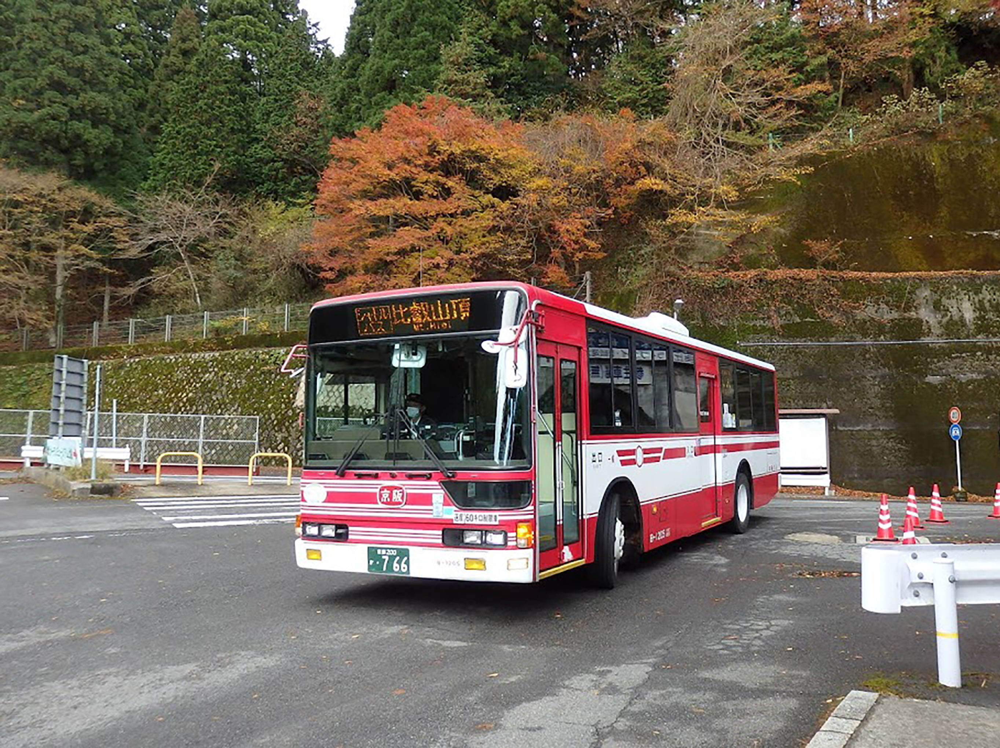

京都へ引っ越した時、もう一ヶ月になりました。 しかし、残念ながら引っ越したばかり大学の入学式を始まりました。
ですから、旅行というのはもちろん無理になりました
三週間の大学生活後、待ちに待ったゴールデンウィークになりました、今回へ行く場所は比叡山です。
まず「一乗寺駅」から叡山電車で比叡山へ行きます！
 山登り結構辛いと思うのでケーブルカーで比叡山頂へ行きます
ケーブルカー  比叡山頂〜〜  延暦寺東塔  延暦寺戒檀院  延暦寺大講堂  琵琶湖~~~  最後にバスで家に帰りました。  ちなみにバス運賃は770円です。高すぎると思います！